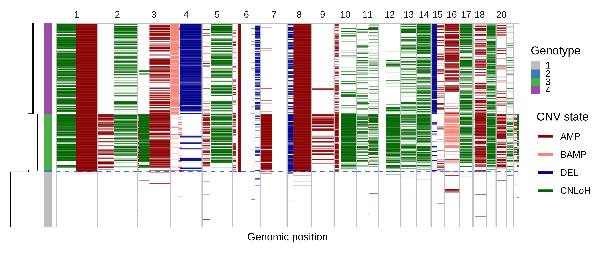
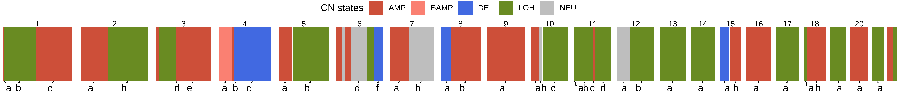
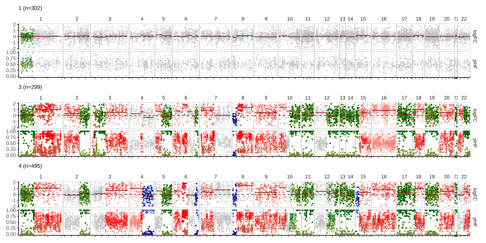
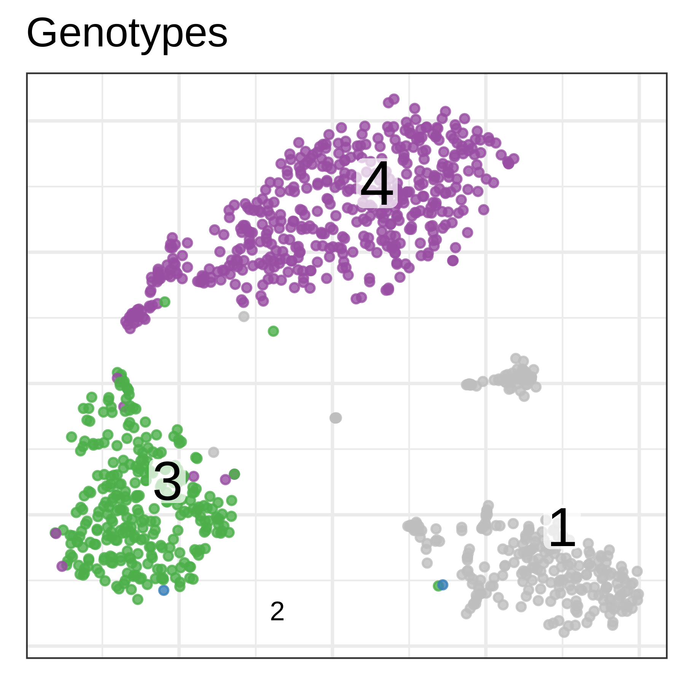
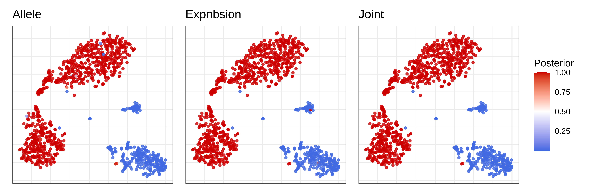
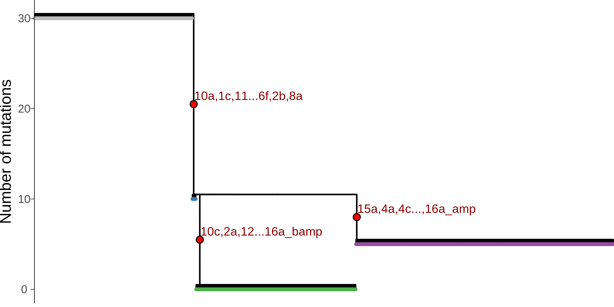

Interpreting Numbat outputs
In this tutorial, we will illustrate how to visualize and interpret Numbat output, using a triple-negative breast cancer dataset (TNBC1) from Gao et al. We will use pagoda2 for visualizing cells in low-dimensional expression space.
library(ggplot2)
# library(Numbat)
devtools::load_all('~/Numbat')
library(dplyr)
library(glue)
library(data.table)
library(ggtree)
library(stringr)
library(tidygraph)
library(patchwork)# summarize output files into a Numbat object
nb = Numbat$new(out_dir = '~/paper_data/numbat_out/TNBC1_demo')
# read saved pagoda2 object
pagoda = readRDS('~/paper_data/conos_objects/TNBC1.rds')0.1 Copy number landscape and single-cell phylogeny
As an overview, we can visualize the CNV calls in single-cells and their evolutionary relationships in an integrated view:
mypal = c('gray', "#377EB8", "#4DAF4A", "#984EA3")
nb$plot_phylo_heatmap(
geno_bar = TRUE,
p_min = 0.9,
pal_clone = mypal,
multi_allelic = TRUE
) In this visualization, the single-cell phylogeny (left) is juxtaposed with a heatmap of single-cell CNV calls (right). The CNV calls are colored by the type of alterations (AMP, amplification, BAMP, balanced amplification, DEL, deletion, CNLoH, copy-neutral loss of heterozygosity). The colorbar in-between differentiates the distinct genetic populations (genotype). The dashed blue line separates the predicted tumor versus normal cells. This tells us that the dataset mainly consists of three cell populations, a normal population (gray) and two tumor subclones (green and yellow).
0.2 Consensus copy number segments
Let's take a look at the consensus segments to better understand what CNVs are called across different cells.
nb$segs_consensus %>% plot_consensus()
0.3 Bulk CNV profiles
We can also visualize these CNV events in pseudobulks where the data is more rich, aggregating cells by clone:
# Log-likelihood ratio cutoff
LLR_min = 50
nb$bulk_clones %>%
mutate(
cnv_state_post = ifelse(LLR < LLR_min, 'neu', cnv_state_post),
state_post = ifelse(LLR < LLR_min, 'neu', state_post)
) %>%
plot_bulks(phi_mle = TRUE, legend = FALSE)
0.4 Single-cell CNV calls
Numbat probabilistically evaluates the presence/absence of CNVs in single cells. The cell-level CNV posteriors are stored in the nb$joint_post dataframe:
head(nb$joint_post) %>% select(cell, CHROM, seg, cnv_state, p_cnv, p_cnv_x, p_cnv_y)## cell CHROM seg cnv_state p_cnv p_cnv_x p_cnv_y
## 1: TNBC1_AAACCTGCACCTTGTC-1 10 10a amp 0.43169520 0.8213868 0.13928365
## 2: TNBC1_AAACCTGCACCTTGTC-1 10 10c loh 0.01890174 0.4958024 0.01921461
## 3: TNBC1_AAACCTGCACCTTGTC-1 11 11b loh 0.47301842 0.4333595 0.56156802
## 4: TNBC1_AAACCTGCACCTTGTC-1 11 11c amp 0.88050832 0.8409645 0.58105281
## 5: TNBC1_AAACCTGCACCTTGTC-1 11 11d loh 0.91233692 0.4969244 0.91242479
## 6: TNBC1_AAACCTGCACCTTGTC-1 12 12b loh 0.96215438 0.4972205 0.96255714which contains cell-level information on specific CNV segments (seg), their alteration type (cnv_state), the joint posterior probability of the CNV (p_cnv), the expression-based posterior (p_cnv_x), and the allele-based posterior (p_cnv_y). We can visualize the event-specific posteriors in a expression-based tSNE embedding:
plist = list()
muts = c('1b', '3c', '4c')
# muts = unique(nb$joint_post$seg_label) %>% gtools::mixedsort()
cnv_type = nb$joint_post %>% distinct(seg, cnv_state) %>% {setNames(.$cnv_state, .$seg)}
for (mut in muts) {
plist[[mut]] = pagoda$plotEmbedding(
alpha=0.8,
size=1,
plot.na = F,
colors = nb$joint_post %>%
filter(seg == mut) %>%
{setNames(.$p_cnv, .$cell)},
show.legend = T,
mark.groups = F,
plot.theme = theme_bw(),
title = paste0(mut, '(', cnv_type, ')')
) +
scale_color_gradient2(low = 'royalblue', mid = 'white', high = 'red3', midpoint = 0.5, limits = c(0,1), name = 'Posterior')
}
wrap_plots(plist, guides = 'collect')
0.5 Clonal assignments
Numbat aggregates signals across subclone-specific CNVs to probabilistically assign cells to subclones. The information regarding clonal assignments are contained in the nb$clone_post dataframe.
nb$clone_post %>% head() %>% select(cell, clone_opt, p_1, p_2, p_3, p_4)## cell clone_opt p_1 p_2 p_3
## 1: TNBC1_AAACCTGCACCTTGTC-1 4 5.081008e-57 2.300414e-16 7.396132e-27
## 2: TNBC1_AAACGGGAGTCCTCCT-1 1 1.000000e+00 2.232812e-51 1.591547e-84
## 3: TNBC1_AAACGGGTCCAGAGGA-1 4 1.427456e-81 5.475283e-09 3.109571e-26
## 4: TNBC1_AAAGATGCAGTTTACG-1 3 2.141061e-18 2.950639e-04 6.176669e-01
## 5: TNBC1_AAAGCAACAGGAATGC-1 4 1.704233e-51 8.305804e-09 3.074182e-30
## 6: TNBC1_AAAGCAATCGGAATCT-1 3 3.121428e-84 1.001983e-25 1.000000e+00
## p_4
## 1: 1.000000e+00
## 2: 1.744050e-65
## 3: 1.000000e+00
## 4: 3.820380e-01
## 5: 1.000000e+00
## 6: 9.979171e-24Here clone_opt denotes the maximum likelihood assignment of a cell to a specific clone. p_{1..4} are the detailed breakdown of the posterior probability that the cell belongs to each clone, respectively. Let's visualize the clonal decomposition in a tSNE embedding.
pagoda$plotEmbedding(
alpha=0.8,
size=1,
groups = nb$clone_post %>%
{setNames(.$clone_opt, .$cell)},
plot.na = F,
plot.theme = theme_bw(),
title = 'Genotypes',
pal = mypal
)
0.6 Tumor versus normal probability
Combining evidence from all CNVs, Numbat derives an aneuploidy probability for each cell to distinguish tumor versus normal cells. We can visualize the posterior aneuploidy probability based on expression evidence only, allele evidence only, and jointly:
p_joint = pagoda$plotEmbedding(
alpha=0.8,
size=1,
colors = nb$clone_post %>%
{setNames(.$p_cnv, .$cell)},
plot.na = F,
plot.theme = theme_bw(),
title = 'Joint',
) +
scale_color_gradient2(low = 'royalblue', mid = 'white', high = 'red3', midpoint = 0.5, name = 'Posterior')
p_allele = pagoda$plotEmbedding(
alpha=0.8,
size=1,
colors = nb$clone_post %>%
{setNames(.$p_cnv_x, .$cell)},
plot.na = F,
plot.theme = theme_bw(),
title = 'Expnbsion',
) +
scale_color_gradient2(low = 'royalblue', mid = 'white', high = 'red3', midpoint = 0.5, name = 'Posterior')
p_expr = pagoda$plotEmbedding(
alpha=0.8,
size=1,
colors = nb$clone_post %>%
{setNames(.$p_cnv_y, .$cell)},
plot.na = F,
show.legend = T,
plot.theme = theme_bw(),
title = 'Allele',
) +
scale_color_gradient2(low = 'royalblue', mid = 'white', high = 'red3', midpoint = 0.5, name = 'Posterior')
(p_expr | p_allele | p_joint) + plot_layout(guides = 'collect') Both expression and allele signal clearly separate the tumor and normal cells.
0.7 Tumor phylogeny
The clone-level mutational history constructed by Numbat can also be visualized. Here the nodes represent clones (each carrying a distinct genotype) and edges represent mutational events.
nb$plot_mut_history(pal_clone = mypal)